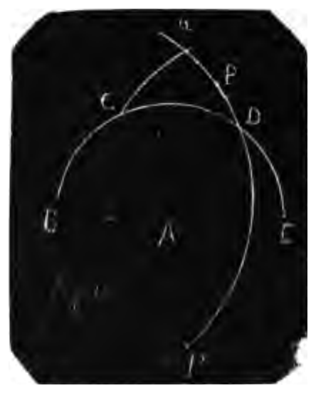

§ 66: Segment Bisection Without Straightedge¶
[The text resumes on p. 32 following the lacuna of pp. 28–31.]
and the three lines \(PE, BE, pE\) for the three \(AQ, pQ, BQ\), and \(Pm\) for \(AS\), the equation \(AS \cdot pQ = (Ap)^2\) of § 22 will change into \(Pm \cdot BE = (BP)^2\); and since \(BE = 2\,AB\) and \(BP = AB\), we shall have \(2\,AB \cdot Pm = (AB)^2\), and dividing by \(AB\), \(2\,Pm = AB = 2\,BM\). Moreover triangle \(BPM\) will have angles equal to triangle \(BPm\) (I.8). Hence \(mP\) is parallel to \(BM\) (I.28). But triangles \(BPm, BPE\) also have equal angles (§ 22). Thus \(mP\) is parallel to \(BE\) (I.28), and the straight lines \(BM, BE\) coincide.
Sol. II. With radius \(AB\) and center \(A\) describe the semicircumference \(BCDE\) (§ 64) (fig. 15). With the same radius and centers \(B\) and \(E\), mark two indefinite arcs \(CP, DQ\). With the same centers \(B\) and \(E\), and radius \(BE\), mark the two arcs \(EQ, BP\). With center \(P\) and radius \(PB\) describe arc \(BM\). With center \(E\) and radius \(PQ\) cut arc \(BM\) at \(M\). Then \(M\) will be the point sought.
Dem. Making the due substitutions in Fig. 5 (§ 23), we shall have \(PQ \cdot BE = (BE)^2 - (BP)^2\); and since \(BE = 2\,AB\), \(BP = AB\), and \(PQ = ME\), we obtain \(2\,ME \cdot AB = 4(AB)^2 - (AB)^2 = 3(AB)^2\). Therefore dividing by \(AB\), we have \(2\,ME = 3\,AB\). But since opposite sides are equal, \(PQEM\) will be a parallelogram; for divided into two equal-sided triangles by diagonal \(QM\), it gives angle \(PQM = QME\) (I.8), hence \(PQ\) parallel to \(ME\) (I.28), and likewise \(PM\) to \(QE\) (I.33). Moreover \(PQ\) is parallel to \(BE\) (§ 23); thus \(ME, BE\) coincide. Since therefore \(ME = MA + AE = MA + AB\), we have \(2\,ME = 2\,MA + 2\,AB = 3\,AB\); hence \(2\,MA = AB\).
Sol. III. With center \(A\) and radius \(AB\) describe the semicircumference \(BCDE\) (§ 64) (fig. 16). With center \(B\) and radius \(BE\) describe the indefinite arc \(PEp\). With center \(E\) and radius \(EC\) cut it at \(P\) and \(p\). With centers
f. 0058 · p. 33\(P\) and \(p\), and with the same radius \(PE\), describe two arcs intersecting at \(M\). Then \(M\) will be the point sought.
Dem. Point \(M\) will lie on straight line \(BE\) (§ 13); and substituting in the equation (§ 19) \(pP \cdot pQ = (Ap)^2\) the distances, or corresponding lines of this Figure, we obtain \(EM \cdot EB = (PE)^2\). Hence because \((PE)^2 = (EC)^2 = 3(AB)^2\) (XIII.12) (§ 2), we shall have \(2\,AB \cdot EM = 3(AB)^2\), and dividing by \(AB\), \(2\,EM = 3\,AB\); or \(2\,AE + 2\,AM = 3\,AB\); and subtracting the equal quantities \(2\,AE, 2\,AB\), there remains \(2\,AM = AB\).
Sol. IV. Having described the semicircumference \(BCDE\) (§ 64), with center \(B\) and radius \(BD\) (fig. 17) describe an indefinite arc \(aDp\). With the same radius \(BD\) and center \(E\), cut this arc at \(a\). With radius \(Aa\) and center \(E\) cut this arc \(aDp\) at \(P\) and \(p\). With the same radius \(Aa\), and centers \(P\) and \(p\), mark two arcs intersecting at \(M\). Then \(M\) will be the point sought.


Dem. Point \(M\) will lie on straight line \(BE\) (§ 13). Making the due substitutions in equation \((AQ)^2 = (Ap)^2 + pQ \cdot PQ\) (§ 18), we shall have \((PB)^2 = (PE)^2 + EB \cdot MB\); or \((BD)^2 = (Aa)^2 + 2\,AB \cdot MB\); that is, \(3(AB)^2\) (XIII.12) (§ 2) \(= 2(AB)^2\) (§ 27) \(+ 2\,AB \cdot MB\). Hence subtracting \(2(AB)^2\), there remains \(AB = 2\,MB\).
Many other solutions can be given to this Problem, either by employing new circle radii or by combining among themselves the solutions given above; but I deem it superfluous to set them down. A very simple one, which however in practice does not lead to great exactness, because in it the intersection of the arcs takes place at too acute an angle, is the following:
Sol. V. With radius \(AB\) and center A (fig. 14) having described the semicircumference \(BCDE\) (§ 64); with center E and radius \(EB\) having described the indefinite arc EB (\(PBp\)); with center B and radius \(BA\) cutting this arc at P and p; with these centers P and p, and the same radius \(BA\), describe two arcs PB and pB intersecting at M. Then M will be the point sought.
Dem. Point M will lie on \(BE\) (§ 13). Then since the two isosceles triangles \(PBM, PBE\) are similar because of a common base angle at B (I.5 and 32; VI.4), we shall have \(BE : BP :: BP : BM\); hence (VI.17) \(BE \cdot BM = (BP)^2 = (AB)^2\), or \(2\,AB \cdot BM = (AB)^2\); therefore dividing by \(AB\), there remains \(2\,BM = AB\).